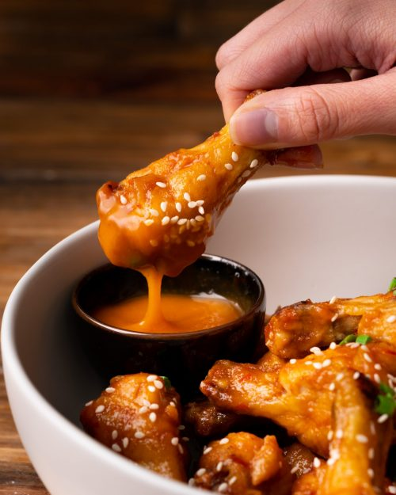

Oven-baked Chili Ginger Wings

Description:
A healthy version of fried chicken? Hell, yes! These chicken wings have all the crunch but
way less guilt, giving you maximum feel-good vibes. Who knew baking could be so
brilliant? Try these at your next party or as a delicious appetiser.
Ingredients:
- 1kg (2.2lbs) chicken wing drumettes
- 1 tbsp baking powder
- 1/2 bottle of Marion's Kitchen Sticky Chilli & Ginger Asian Steakhouse Marinade
- 1/2 tsp white sesame seeds
- 1 tsp finely chopped spring onion (scallions)
- 1/4 cup hot sauce (e.g. Coconut Sriracha) (optional)
Steps:
-
Preheat the oven to 120°C/250°F.
-
Toss the wings with the baking powder and sea salt. Place the wings onto a
baking rack set inside a roasting tin. Cook in the oven for 30 minutes. Turn
the wings over. Increase oven heat to 200°C/390°F and cook for another 30-
40 minutes or until crispy and cooked through.
-
Place the wings in a large frying pan or wok over medium-high heat. Pour
over the marinade and toss until evenly coated and the sauce has thickened.
Remove from heat and place onto a serving plate. Sprinkle with sesame
seeds and spring onion. Serve with your desired hot sauce if using.